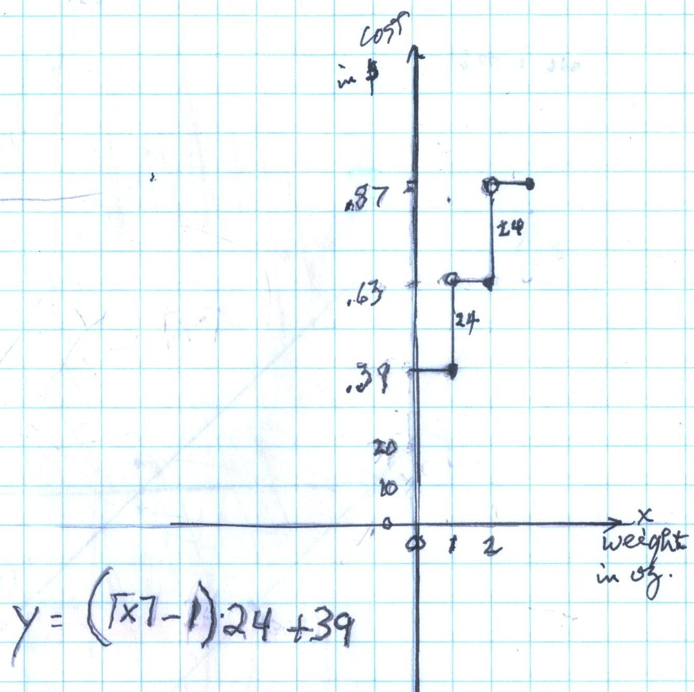
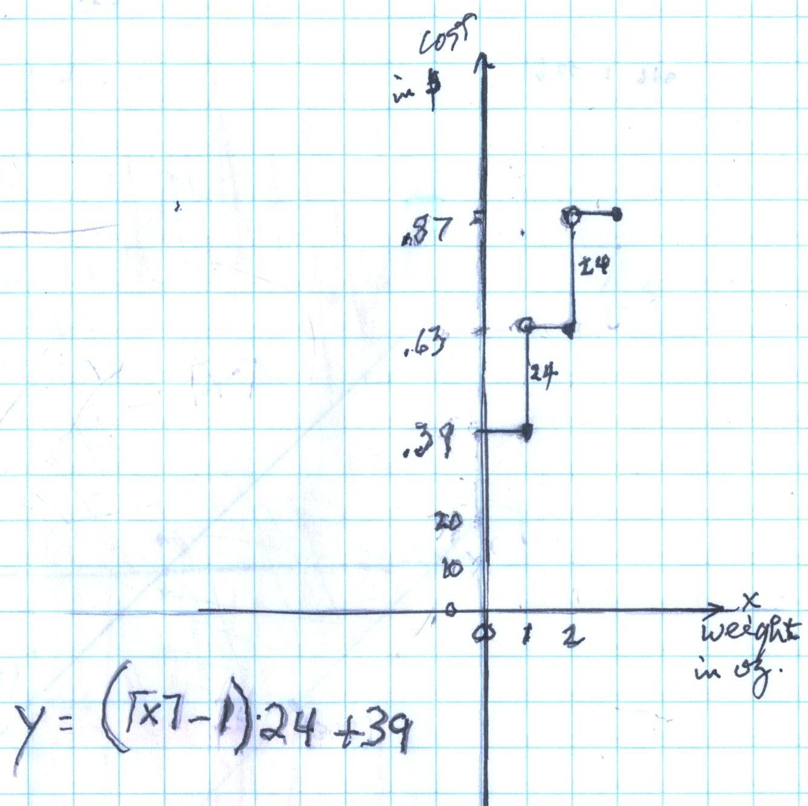

About Don's teaching
September 2, 2012After the Summer of '12, Jackie working with Don, he received an email from Jackie's Mom:
"I have been passing your name around like candy. I am so delighted with the work you've done with Jackie. :)[Jackie is continuing with Don in the Fall].:
From Bernd, the teacher in Germany, a month later:
"..
I've only started with the infinite series 1/2 + 1/4, ... with 3 groups: a group
of 5-year-olds (8 Pupils) , a group of second graders (7-8 years; 13 pupils) and
a mixed math group form grades 1 - 4 (12 pupils).
I
called the lessons "Chocolate maths" because I like to use everyday
things and in this case I bought some quadrilateral bars of chocolate of the
brand "Ritter" which are 4x4 shaped.
Above photo is from the back cover of Don's worksheet book: Don, with Khaki at age 17, used the computer program Derive to "zoom in" on a curve to find the slope of the tangent at a point on the curve, leading to the derivative. She was preparing for her Fall calculus class (see ch. 14).
The broadcast was originally on the Radio Free School 1/2 hour slot on Wednesdays, 12-12:30 E.S.T. at CFMU 93.3 FM on February 13-14, 2007 and the following stations (check for times at these stations):
CKDU 88.1 FM Halifax, Nova Scotia;
Free
Radio Olympia 98.5 FM Olympia, Washington www.frolympia.org
;
KRBS-lp 107.1 FM in Oroville, California www.radiobirdstreet.org
;
Radio Free Veronica, www.radioveronica.us/rfv.htm,
West Point, PA;
Free Radio Asheville, 107.5 fm, North Carolina
main.nc.us/iww/fra/
WXOJ-LP 103.3
FM,
Northampton, Massachusetts

November 2005 After working with Don for a few weeks on infinite series, K.C., age 7 11/12, came up with this statement: " It's the opposite, when the numbers on top of two fractions are the same, like 5/3 and 5/2, the fraction with the highest number on the bottom is the smallest". WOW! Nice job, K.C.
They were a group of 6 graduate Physics students and 4 faculty members. After introductions Don had them share 6 cookies between 7 people as Brad (who just finished 2nd grade) did it - when he couldn't share them, he cut them in half, (a natural and easy thing to do)- and each person ended up with 1/2 + 1/4 + 0/8 + 1/16 + 1/32 + 0/64 + ... cookies (an infinite series!) See sample problems from ch. 2 in Don's books .
Don emphasized that there are always patterns in mathematics, (a bimal .110110110... (from the tops of the fractions), versus the decimal 0.857142... obtained by cutting the cookies into 10 pieces instead of 2, both = 6/7), visualization (actually cutting the cookies (3x5" cards), the important mathematics (infinite series), listening to ones students, and learning to learn. Don was also able to show things on his website- like filling in squares to get infinite series as in ch. 1 of his books, starting graphs to slopes in ch. 6, solving equations in ch. 8, and the java applet IES in Japan did with a problem from ch. 11- see http://www.ies.co.jp/math/java/comp/itoi/itoi.html . Don learned some things also; it was a very exciting meeting!
13 April 2005: Don received this email from Dr. Karliner:
Dear Don,
Many thanks for your visit. I know that you warned us that you never gave a talk exactly like this, but the people who came to it told me it was very interesting to them and they enjoyed it. Some of them will probably visit your program when their kids are a little older. The kids who come to your program are so fortunate, you are forever interested in seeing how their minds work.
Best regards and many thanks from us all,
Inga Karliner
on behalf of the Physics Education Research group at the Physics Department at UIUC
13 November 2004
A voice from the past! Don received a call from Betty in Houston, who wanted him to work with a group to begin The Madison Project ll. Bob Davis (now deceased) was the director of The Madison Project starting in the late 60's. He wrote mathematics materials, made films of classes using these materials, and conducted teacher workshops around the country, mostly supported by NSF. Don continues to use his ideas with his students today. Don worked with him for about 15 years in the Clayton Public Schools and at Webster College in St. Louis, and in NYC, before coming to Champaign, IL to work with Bob on PLATO, a computer-based education system. Don worked with some great teachers during those 15 years, such as Betty, Kathy, Gordon, Jerry and others whom Bob chose to work with him in The Madison Project.
The idea is to really make a
change in the middle school mathematics programs nationally, by using Bob Davis'
materials, as well as changing how the teaching is done. The objective is to
make mathematics something students enjoy learning and will use later in their life.
I still
fondly remember the summer work I did with you so long ago now. It is great that
you are so busy teaching and encouraging more students in mathematics. My
brother and parents join me in sending fond regards. Best, Jonathan"
(
18 September 2004
See Don's work on
comparing
the spirals for
the Nautilus Shell, The Fibonacci numbers, and the
Equal Tempered Chromatic Music Scale.
2 June 2004
"Hi Mr. Cohen,
How are
you and Mrs. Cohen doing? I hope you are both well.. I have just finished my
first year of graduate school in physics at the University of _. I am working
with _.. to explore the physics of particles containing charm quarks
(particularly D mesons) more thoroughly. Currently I am looking for
irregularities in the detector's magnetic field and unusual properties of the
detector's momentum resolution..
21 April 2004:
..'My warmest thanks to you for all the help you have so obviously given others
over the years'.. - G.P., grandfather of 9 yo ready to start working in Don's
worksheet book.
26 March 2004:
Don completed his week as facilitator of an online
Young Scholar
Colloquium
March 22-26,
for
Davidson Institute for Talent Development.
Don's topic was "Iteration
to infinite sequences, in solving quadratic equations, and obtaining infinite
continued fractions".
His work with the 14 students was enjoyable, challenging and a memorable
experience!
Also on 4 November 2003 Don received this email from Christina in Seattle: "Dear Don, I am enjoying your materials very much. I am intrigued that some of your materials have been translated into Spanish. This is wonderful. I am teaching a group of bilingual (native Spanish AND English speakers) teachers a calculus "romp" at this week. I would so much enjoy being able to tempt them with some materials in Spanish.
Is there any chance you can e-mail me the materials which have been translated? That would be so helpful. I would be happy to pay, of course, and give all the credit where it's due.
I will try to send you an account of the three-day workshop when I return!"
She had studied Don's books in Japanese and wanted to meet Don, observe him teaching and study math with him. She worked hard and asked great questions, for the teaching of mathematics in Japan (as well as in the USA!), is much different than what Don is doing.
(She brought some origami paper and book
for Don's students; and coincidently, see the origami
story from the Christian Science Monitor ).
She has asked Don not to show his write-up of what
they worked on during the month of September. He will honor her wishes.
Wed,
27 Aug 2003 Don received this email:
Dear Don,
I had the pleasure to visit your site and the work of the children with you.
It is wonderful.
We in
Iceland
are developing math workbooks for students and want them to
also see how easy it can be to learn these concepts, especially if you were the
one helping out! I was wondering if it may interest you to come to Iceland and
or help us otherwise, to review the materials we are developing and help us to
improve them? Right now we are focusing on just the student workbooks. In the
future, we will be making teacher guides and I can see how in both contexts you
could be such a great help.
Would you consider this. I look forward to hearing from you.
Warm greetings,
Sunita
Sunita
July
11, 2003
"Hi Don!
At home, I'm learning Advanced Algebra. I come across many problems that are
related to the questions in your worksheet book so I use the book as a reference tool. Bye, Grace" (about 2 years after Don started working with Grace!)
Johann, age
5
now, came from
California to work with Don
the week of August 25, 2003!
Johann's Mom was born and raised in Iceland
and was here when Don received the above email from Dr. Gandhi- what a
coincidence !?
Good to see you Lori and Joe!
Those
of you who are in the Kansas City area, you have a unique math program there
called MathHead Tutoring. It is owned by Lori Johnson Morse, tel.: 816.560.8098.
Lori and her husband came to visit and participate in, Don's classes in Champaign,
July
29-30th, 2003.
Lori has been using Don's worksheet book in her
program with elementary and high school students for many years now. She says in an
email of September 30, 2003
: "One thing I noticed about what Don does
is he makes the students work hard, think harder. I could see the good effects
right away".
I'm doing fine. School ended about three weeks ago. I'm going into 8th
grade. I am currently attending the U of C Young Scholars Program. We're
learning geometry. Right now, I'm working on groups, subgroups, and polyominoes.
'Dear Don, Just a note to let you know how helpful I continue to find your book and workbook. Watching you work with children in person has increased my understanding of how math can be approached in a different and more meaningful way. The way you interact with kids is truly masterful. Math is more than just memorizing ways of doing problems and you are living proof of the excitement and stimulation that lies ahead for those who are fortunate enough to have contact with you'. 'Barb M., who brought her son Andrew to Champaign from Idaho, to work with Don for a week.
"Typical approach studies one simple concept at a time- boring- isolated, irrelevant.
Instead- have a more
interesting, complicated problem, that uses these concepts in finding the
answer. This leads the student through math concepts, seeing them in their
natural context and usefulness. Also, when the problem is finally solved, the
"Look what I can do!" feeling spurs further exploration of math."
Don would add :
visualization
look for patterns
learn to learn
every student is different
teach one student at a time
teach arithmetic via important mathematics
have students make up problems
have a student do the same problem, different ways
guessing is
important
Try
sample problems from Don's books,
by chapter!
New discoveries, new student work and Don's new pages: Don's materials are certainly for Homeschoolers!, Johann, a 4 year old in California, starts working with Don via Mom; Ian, a 4th grader, adds sine waves at right angles to make a bowtie (Lissajous figures); Jesse, a 4th grader, finds a pattern to change a mixed number to an improper fraction; Tessa, 6 years old, solves equations and subtracts using negative numbers; Geoffrey's work on polypowers with fractions!; Don paints in watercolor with.. , +++
The non-trivial use of Calculators and Computers in Don's materials
The important
mathematics
in
Don's materials
On
Thinking About and Doing Mathematics
Puzzles,
Games, & Hands-On Activities Don Uses With Students
After 45 years of teaching math & parenting..